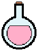
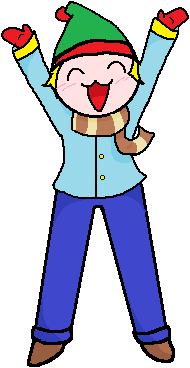

Existem diversos tipos de itens com diferentes funções. Os itens podem ser adquiridos de dois modos diferentes, esses são:
- Comprando no NPC da Loja usando alguma das ‘Moedas do Jogo’(conforme visto nesse seção)
- Adquirido por cumprir uma missão de algum NPC ou completando os desafios de um professor.
Tipos de Itens:
Consumíveis
Eles lhe darão algum tipo de beneficio durante a execução dos desafios de um professor. E serão apagados do inventario após usa-los.
Ex: Mais uma vida, congelar o tempo, etc.
Animações

São todas as animações presenciadas durante o jogo, você já deverá tê-las presenciado para poder possui-las. Elas são armazenadas na Videoteca.
Ex: Animação de Introdução.
Skins
São os itens que modificarão a aparência do personagem, como os seus cabelos, pele e roupas, baseados em diferentes temas.
Ex: Zumbi, Pirata, etc.
Temas
São itens modificadores do estilo dos corredores do colégio, alterando o ambiente da escola de acordo com o escolhido.
Ex: Natal, Verão, etc.